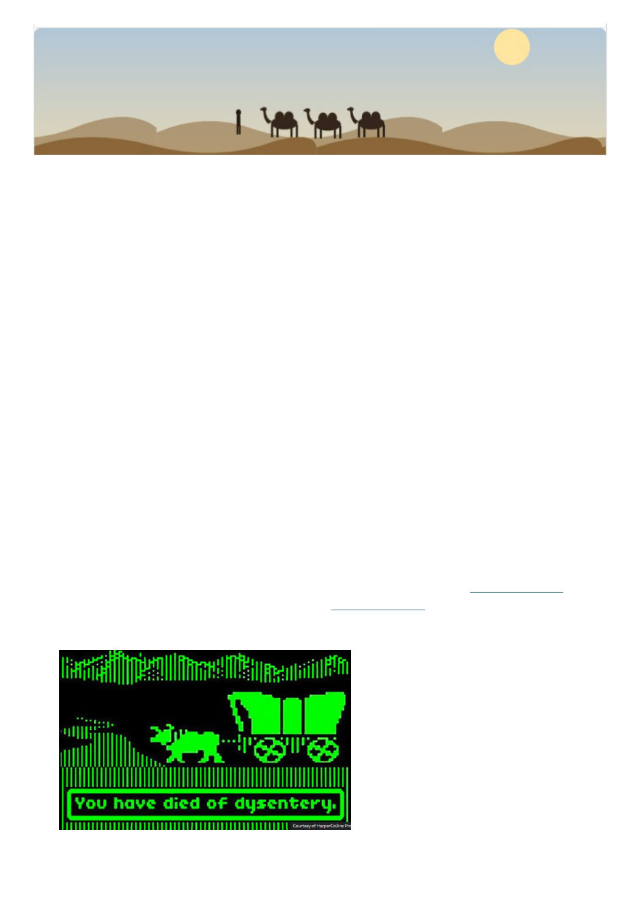

Journeys in Time
1994 – You file into the computer lab with
your fellow primary school students. It’s a
room in the middle of the building, without
external windows. Banks of heavy
monolithic Apple computers sit on desks.
You and your friends hurry to get some
computers side-by-side.
There’s a few disks to choose from,
but who wants to play “Number Munchers”
or “Lemonade Stand” – “Odell Lake” isn’t
bad but there’s only one game everyone
really wants to play – “Oregon Trail.”
You insert the square floppy disk into
the slot and it loudly clicks into place,
followed by some loud whirring. The
familiar game introduction screen appears in
glowing green monochrome. Soon you are
naming your wagon party after your friends,
and you’re off down the trail. Your wagon
trundles along in its simple animation. Oh no
“Gary has died of dysentery!”
All too soon the discordant grating
buzzer sounds throughout the school - the
hour of computer lab is up, and you haven’t
finished the game! Unfortunately there’s no
way to save, reluctantly, you shut down the
game, left with just the feeling of a journey
incomplete. Back to the main classroom for
math time.
I never did beat Oregon Trail --
always ran out of time. And not having beat
it always bothered me. I actually have tried
to play a few times in more recent years but
every version I’ve found online has been
really buggy and failed to present the whole
game (most recently when one had to change
the disk halfway through there seemed to be
no way to continue the game, despite this was
playing off a copy on the internet with no
disks involved).
If you were to follow the
ancient Silk Road east out of Europe
across a thousand miles of grassy
plains, through Turkmenistan,
Uzbekistan and Tajikistan, north of
Afghanistan and south of Kazakhstan,
the “Mountains of Heaven” would rise
up like a serrated wall before you. You
would journey into their imposing
embrace in the broad and fertile
Fergana Valley, at the end of which lies
the 3,000-year-old city of Osh, You
have arrived in Kyrgyzstan.
Thus begins one of my
favorite openings to an article I’ve
had published (actually the article
that “re-launched” my writing
career, 7 years after my last
published article). I’ve always
loved history and travel, and so the Silk
Road has always interested me. And,
specifically, when I thought about the
Silk Road I would often think one could
make a really cool game just like the
Oregon Trail, but on the Silk Road.
Some weeks ago the “Fable” model
of Claude AI was released, I wanted a